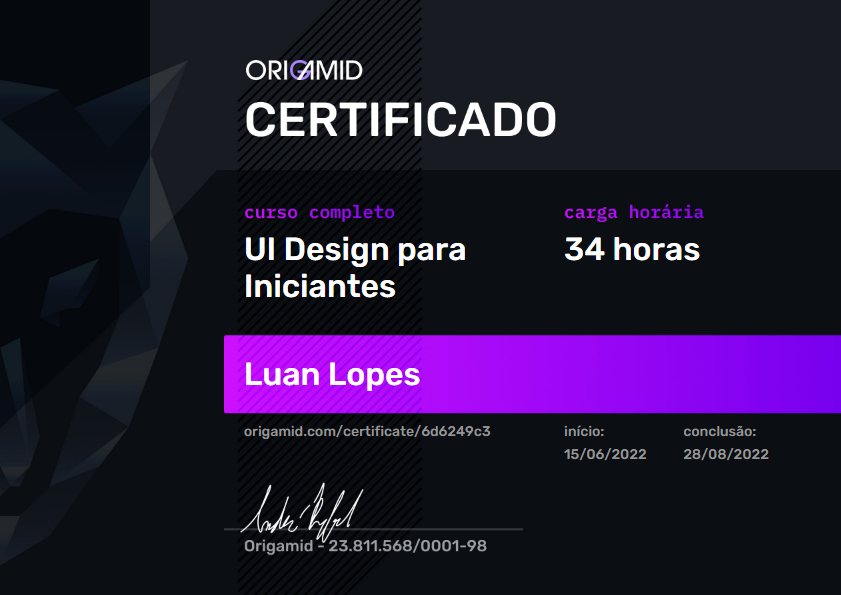

UI Design para iniciantes
Sobre o curso
Curso muito bom, principalmente pra gente do front-end antes me sentia meio travado na hora de planejar os layouts dos meus projetos, hoje ja sinto que isso melhorou muito em relação a antes do curso porque hoje em dia sei por onde começar e qual caminho tenho que seguir pra ter um layout bem estruturado e visualmente bonito.
Projetos realizados
Prototipação de um portifólio pessoal.
Esse era um Projeto/Exercicio que envolvia varios tipos de navegações diferentes.
Projeto final que era um site de venda de bicicletas e de seguros, futuramente foi usado no curso de HTML.
Considerações
Apesar de não ter me aprofundado muito na area de UI depois do termino do curso, achei um curso otimo tanto pelo conteudo quanto pela didatica do professor que tornava um assunto um tanto complicado em algo bem mais facil de se entender pelo modo como ele explicava, foi um curso que me permiti hoje criar layouts com certa facilidade, e com um tempo bem menor do que eu levava antigamente na hora da prototipação de meus projetos.